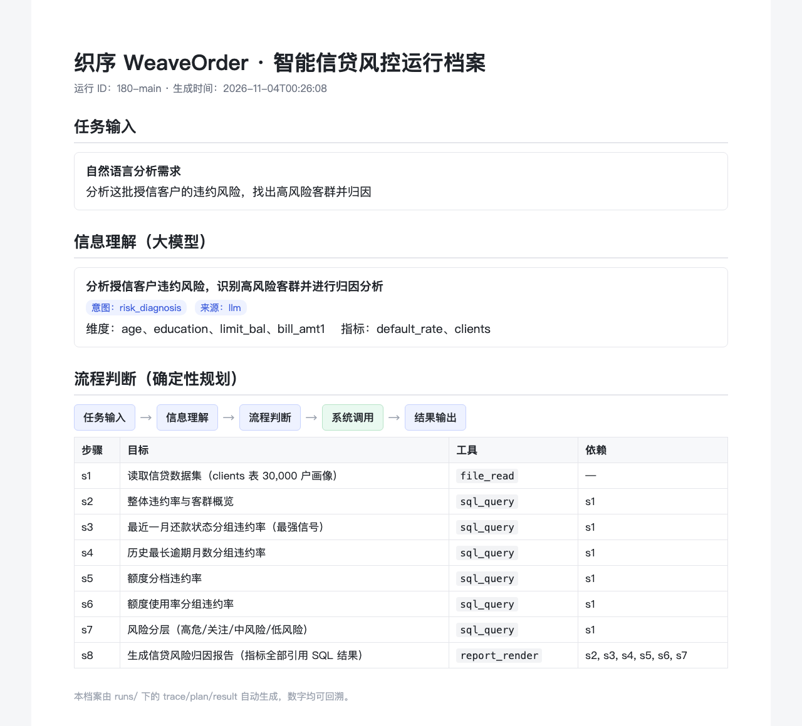
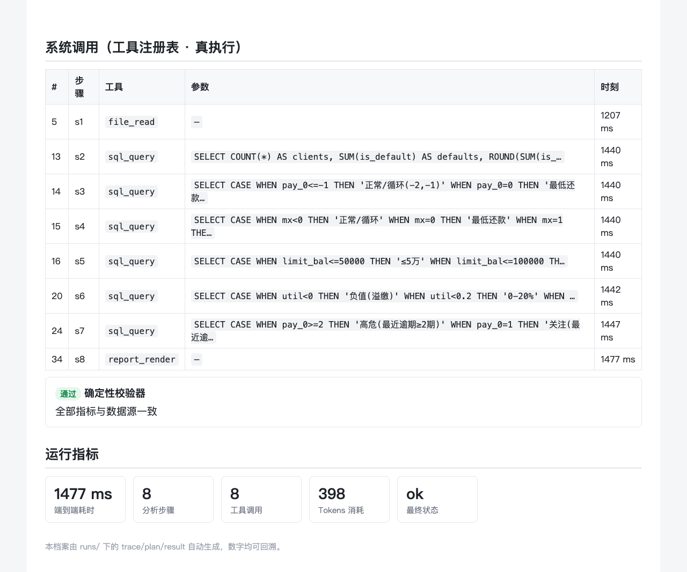
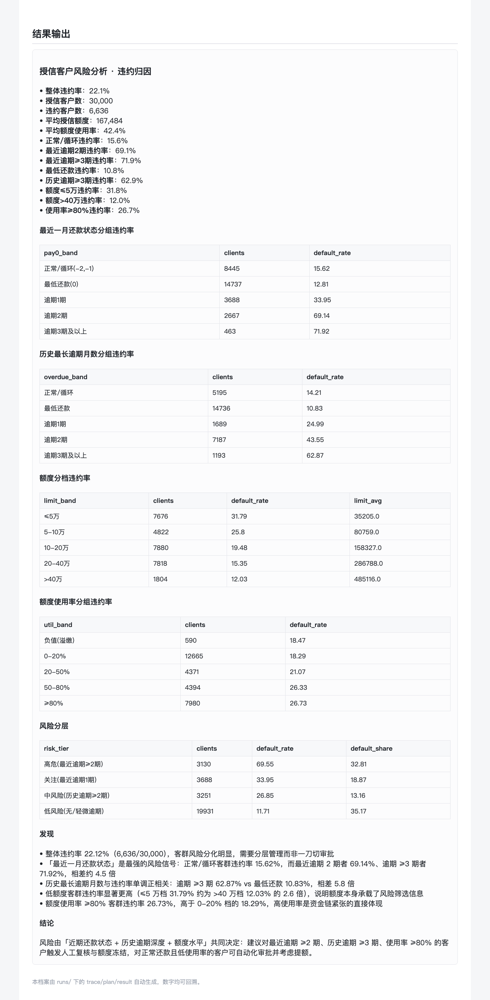

| 项目名称 | 织序 WeaveOrder —— 智能信贷风控审批助手 |
| 主题赛名称 | 行业赋能 |
| 赛题名称 | 金融智能体方案赛 |
| 团队名称 | 兰儒恺 |
| 填报日期 | 2026 年 11 月 4 日 |
| 项目名称 | 织序 WeaveOrder —— 智能信贷风控审批助手（与官网提交材料保持一致） |
| 应用行业及场景 | 金融行业 · 信用卡与消费信贷的授信审批与贷后风险监控。 覆盖风险归因、逾期分析、额度与使用率分析、客群分层、账龄趋势五类高频分析场景。 |
| 核心技术 | ☑ 自然语言处理 ☑ 知识图谱 ☑ 深度学习 ☑ 其他：智能体编排（任务规划 / 工具调用 / 多智能体协同）、确定性独立校验 |
| 应用发展阶段 | ☑ 应用示范阶段（基于 30,000 户真实授信数据完成端到端验证， 9 项评测全部通过，产出可运行系统与演示视频） |
授信审批与贷后监控是信用卡、消费金融等业务的核心环节，具有高频、刚需、强监管的特征。 传统人工风险分析面临三重困难：
与此同时，金融监管对风险模型的可解释性、可审计性与公平性提出明确要求： 结论必须可追溯到数据、过程可复现、结果可复核。纯人工分析依赖个人经验，难以沉淀与审计； 纯大模型生成又存在数字幻觉风险。市场迫切需要一种既快又可审计的智能体方案。
本项目以真实信贷数据集为验证对象，构建「织序 WeaveOrder」智能信贷风控智能体， 把风险分析从 80 分钟压缩到 1.5 秒，并保证报告中的每一个数字都能回溯到数据源。
系统以自然语言为入口，用户直接提出分析需求（如「分析这批授信客户的违约风险，找出高风险客群并归因」）， 智能体自动完成从需求理解到报告交付的全过程。核心功能如下：
| 功能 | 说明 | 输出 |
|---|---|---|
| 信息理解 | 大模型把自然语言解析为结构化分析要点（意图、维度、指标），失败自动回退规则解析 | brief.json |
| 确定性规划 | 按意图生成可复现的分析 DAG（步骤、依赖、同层并行策略） | plan.json |
| 系统调用 | 工具注册表统一调度 file_read / sql_query / report_render，SQL 只读真执行 | rows / metrics |
| 独立校验 | 校验器不走渲染路径，直接从 SQL 结果重新解析每个指标并比对，错即拦截 | verify 事件 |
| 结果输出 | 生成 Markdown 风险报告，全部数字引用 SQL 结果 | report.md |
支持五类分析意图：违约归因（主场景）、逾期分析、额度与使用率、 客群分层、账龄趋势，覆盖金融机构风险部门的主要日常分析需求。
系统采用「大模型理解 + 确定性规划 + 工具真执行 + 独立校验」的五段闭环架构：
数据层：采用 UCI 公开数据集「Default of Credit Card Clients」（台湾地区某银行 2005 年 4–9 月信用卡授信客户，30,000 户、25 个字段），装载进内存 SQLite。所有派生指标 （最长逾期月数、近 6 月逾期次数、额度使用率等）在 SQL 内现算，不预先固化， 保证报告数字可回溯到同一条 SQL。
工具层：工具注册表统一管理三个工具，参数经 JSON Schema 校验；
sql_query 只允许单条只读 SELECT，并对 ATTACH / PRAGMA / INSERT / UPDATE / DELETE /
DROP / CREATE 等关键字做白名单拦截，确保数据源只读、可审计。
规划层：规划器是确定性模板——同一意图永远生成同一份 DAG， 同层步骤并行执行，因此任意次运行结果完全一致，可复现、可审计。
校验层：校验器不信任渲染层，直接从 SQL 结果重新解析每个指标的引用并独立重算， 与报告值比对；一旦不一致立即判定失败并拒绝发布报告。
部署与运行：Python 3.9 运行时，零新增第三方依赖（仅用标准库）， 支持离线规则解析模式与在线大模型模式，可在无网络环境运行，便于私有化部署。
信用卡与消费金融是典型的高频、强监管、数据密集业务。风险分析贯穿授信审批、 额度管理、贷后监控与催收策略，是金融机构的核心成本项与价值项。当前市场存在三类方案， 均存在明显短板：
| 方案类型 | 代表 | 短板 |
|---|---|---|
| 规则引擎 | 评分卡、规则库 | 刚性、维护成本高，难以捕捉多期行为的组合信号 |
| 纯大模型 | 通用大模型问答 | 数字幻觉、不可审计、结论无法回溯到数据源 |
| BI 分析工具 | Tableau / Power BI | 需要人工编写查询与解读，效率瓶颈仍在人 |
本项目的差异化定位是「可审计的智能体」：既有自然语言入口的效率， 又有确定性规划与独立校验的可信度，正好补上上述三类方案的空白。 随着《商业银行互联网贷款管理暂行办法》等监管要求对模型可解释性与审计留痕的强调， 「可审计的智能体」具备明确的合规溢价与规模化落地空间。
目标客户为银行信用卡中心、消费金融公司、小额贷款公司等持牌金融机构， 以及为其提供风控系统的金融科技公司。潜在合作模式包括：
市场开发策略：先在单一高价值场景（授信风险归因）建立标杆案例， 再横向扩展到贷后监控、反欺诈、合规审查等场景，形成风险分析产品矩阵。
本项目已完成基于真实公开数据的端到端验证，并建立了完整的评测与证据体系：
以「分析 30,000 户授信客户的违约风险并归因」为对照任务， 人工标准作业流程（SOP）实测记录如下：
| # | 步骤 | 操作内容 | 标准工时 |
|---|---|---|---|
| 1 | 数据理解 | 识别 25 个字段与业务语义 | 8 分钟 |
| 2 | 建库导入 | 建表并导入 clients 全量数据 | 5 分钟 |
| 3 | 整体违约率 | 编写并调试整体违约率 SQL | 8 分钟 |
| 4 | 还款状态分组 | 按最近一月还款状态分组统计违约率 | 10 分钟 |
| 5 | 历史逾期分组 | 计算近 6 月最长逾期并分组 | 12 分钟 |
| 6 | 额度与使用率 | 额度分档 + 使用率分组统计 | 12 分钟 |
| 7 | 风险分层 | 交叉维度分层并核对占比 | 10 分钟 |
| 8 | 报告撰写 | 整理数字、撰写发现与结论、排版 | 15 分钟 |
| 合计 | 8 步手工操作 | 80 分钟 |
智能体同一任务的实际运行数据：
| 指标 | 数值 | 说明 |
|---|---|---|
| 端到端耗时 | 1,477 ms | 含 1 次大模型调用 |
| 分析步骤 | 8 步 | 全部成功，无人工介入 |
| 工具调用 | 8 次 | file_read ×1、sql_query ×6、report_render ×1 |
| 报告产出 | 12 项指标 · 5 张明细表 | 数字全部来自 SQL 结果 |
| Token 消耗 | 398 tokens | 信息理解 1 次调用（prompt 283 + completion 115） |
| 最终状态 | ok | 通过独立校验 |
以下为真实运行的完整档案（运行 ID：180-main），包含任务输入、信息理解、
确定性规划 DAG、工具调用、独立校验与最终报告，所有数字均可回溯。



演示视频完整展示系统架构、真实运行与结果归因，时长约 93 秒，扫码即可观看：
9 项评测用例全部通过。黄金值由评测脚本从原始 CSV 独立重算，与被测实现零共享代码。
| Task | 场景 | 期望 | 实际 | 结果 |
|---|---|---|---|---|
| F01 | 违约归因（主用例） | ok | ok | PASS |
| F02 | 逾期维度 | ok | ok | PASS |
| F03 | 额度与使用率 | ok | ok | PASS |
| F04 | 客群分层 | ok | ok | PASS |
| F05 | 账龄趋势 | ok | ok | PASS |
| F06 | 综合概览 | ok | ok | PASS |
| F07 | 注入错误 + 校验开 | failed | failed | PASS |
| F08 | 注入错误 + 校验关 | ok | ok | PASS |
| F09 | 跨维度一致性 | ok | ok | PASS |
关键黄金值（独立重算）：
| 指标 | 数值 | 指标 | 数值 |
|---|---|---|---|
| 授信客户数 | 30,000 户 | 违约客户数 | 6,636 户 |
| 整体违约率 | 22.12% | 平均授信额度 | 167,484 |
| 最近正常/循环违约率 | 15.62% | 最近逾期 2 期违约率 | 69.14% |
| 最近逾期 ≥3 期违约率 | 71.92% | 最低还款违约率 | 10.83% |
| 历史逾期 ≥3 期违约率 | 62.87% | 额度 ≤5 万违约率 | 31.79% |
| 额度 >40 万违约率 | 12.03% | 使用率 ≥80% 违约率 | 26.73% |
系统对 30,000 户授信客户输出的核心归因（报告原文摘要）：
| 客群（按最近一月还款状态） | 客户数 | 违约率 | 相对整体 |
|---|---|---|---|
| 正常 / 循环 | 8,445 | 15.62% | −29% |
| 最低还款 | 14,737 | 12.81% | −42% |
| 逾期 1 期 | 3,688 | 33.95% | +53% |
| 逾期 2 期 | 2,667 | 69.14% | +213% |
| 逾期 ≥3 期 | 463 | 71.92% | +225% |
风险分层结果可直接映射审批动作：
| 风险档 | 判定条件 | 客户数 | 违约率 | 占全部违约 | 建议动作 |
|---|---|---|---|---|---|
| 高危 | 最近逾期 ≥2 期 | 3,130 | 69.55% | 32.81% | 人工复核 + 额度冻结 |
| 关注 | 最近逾期 1 期 | 3,688 | 33.95% | 18.87% | 人工复核 |
| 中风险 | 历史逾期 ≥2 期 | 3,251 | 26.85% | 13.16% | 加强监控 |
| 低风险 | 无/轻微逾期 | 19,931 | 11.71% | 35.17% | 自动审批 |
| 材料 | 文件 | 说明 |
|---|---|---|
| 运行档案（网页） | docs/180-evidence/run-archive.html | 含 trace / plan / report 全量事件 |
| 运行档案截图 | docs/180-evidence/run-archive-part1/2/3.png | 附录 1 所用截图 |
| API 调用日志 | docs/180-evidence/api-call-logs.md | 8 次工具调用与完整事件序列 |
| 数据流转记录 | docs/180-evidence/data-flow.md | 数据源、派生指标口径、步骤依赖 |
| 人工基线对比 | docs/180-evidence/comparison.md | 80 分钟 vs 1.5 秒量化对照 |
| 演示视频 | docs/180-demo.mp4 | 93 秒，二维码见附录 2 |
| 评测报告 | eval/results-finance.md / .json | 9/9 通过，黄金值独立重算 |
| 系统源码 | finance_agent.py / core/finance.py | 可运行、可复现 |
独立校验器（不信任渲染层，从 SQL 结果独立重算每个指标）：
def _verify_report(self, out):
for metric in out.get("metrics") or []:
expected = metric.get("current")
if metric.get("baseline") is not None:
base = metric.get("baseline")
expected = (expected - base) / base * 100
if abs(float(metric.get("value", 0)) - float(expected)) > 0.01:
return False, f"「{metric['name']}」报告值与数据源重算值不一致，已拦截"
return True, "全部指标与数据源一致"
只读 SQL 白名单（数据源不可被写入）：
for kw in ("ATTACH", "DETACH", "PRAGMA", "INSERT", "UPDATE", "DELETE", "DROP", "CREATE"):
if kw in cleaned.upper():
raise ValueError(f"检测到受限关键字：{kw}")
确定性规划（同一意图生成同一份 DAG，同层并行执行）：
plan = build_plan(brief) # 按意图生成 DAG
ready = [s for s in pending if all(statuses.get(d, {}).get("status") in ("ok","degraded")
for d in s["depends_on"])]
with ThreadPoolExecutor(max_workers=min(4, len(ready))) as pool:
outcomes = dict(zip([s["id"] for s in ready], pool.map(run_step, ready)))
织序 WeaveOrder 已在差旅编排、经营分析、智慧零售、智能信贷四个场景完成落地验证， 形成可复用的企业流程智能体底座：同一套引擎原语（工具注册表、事件溯源、确定性规划、独立校验）， 只需更换工具集与数据源即可迁移到新的行业场景，迁移成本低、可复制性强。
完整源码、评测报告与运行档案已开源，欢迎扫码观看演示视频或访问仓库获取：